Optical & Magneto-Optical Signatures of Altermagnetism
Probing the Effect of Spin-Splitting
Jakob Wallner
University of Stuttgart
Hauptseminar: Talk 8 of 12
27.05.2026
How do we identify Altermagnets?
The Identification Challenge
Initial Claims (Surface)
- ARPES observed apparent spin-splitting in $RuO_2$.
- Led to widespread classification as a model altermagnet.
The Debunking (Bulk)
- Optical spectroscopy revealed Fermi-liquid behavior.
- Matches a non-magnetic model better than an altermagnetic one.


VS
🗲


Ambiguity remains: Surface effect or Bulk property?
We need a
Fermi-liquid behavior of nonaltermagnetic $\text{RuO}_2$
Non-magnetic Simulation matches the Experimental Data
DFT: Magnetic/Non-Magnetic vs Experiment
"Adding magnetism clearly deteriorates the description of the experimental optical conductivity.
Note in particular the acute discrepancies at low energies where the sharp increase in the optical conductivity (Pauli edge) cannot be reproduced by the magnetic solution."
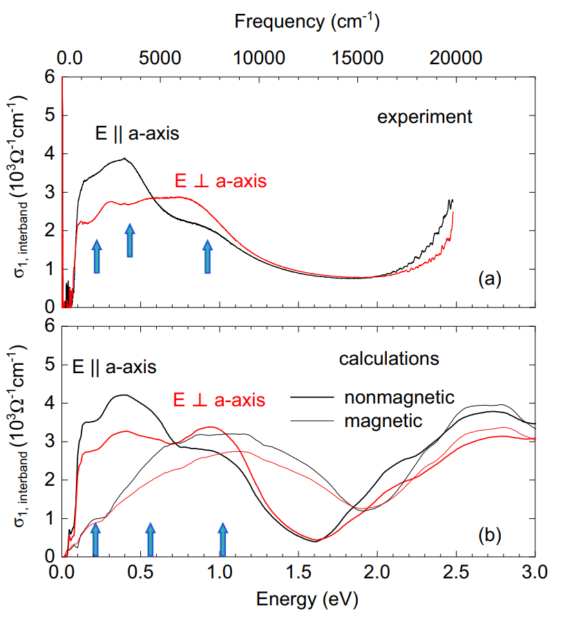
ARPES predicts Altermagnetism
Magneto-Optical measurements show otherwise!
Background:
Magneto Optical Kerr Effect & Mueller Matrix
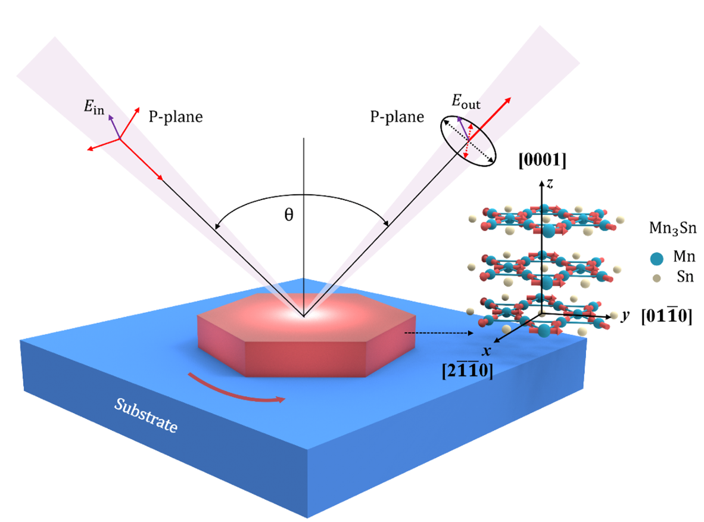
$${S_{\text{out}}(\omega)} = {\begin{pmatrix} \color{#443f85}{ M_{11}} & \color{#443f85}{M_{12}} & \color{#387066}{M_{13}} & \color{#387066}{M_{14}} \\ \color{#443f85}{ M_{21}} & \color{#443f85}{M_{22}} & \color{#387066}{M_{23}} & \color{#387066}{M_{24}} \\ \color{#387066}{M_{31}} & \color{#387066}{M_{32}} & \color{#443f85}{M_{33}} & M_{34} \\ \color{#387066}{M_{41}} & \color{#387066}{M_{42}} & M_{43} & \color{#443f85}{M_{44}} \end{pmatrix}} \color{#8b4e5d}{\begin{pmatrix} I \\ Q \\ U \\ V \end{pmatrix}}$$
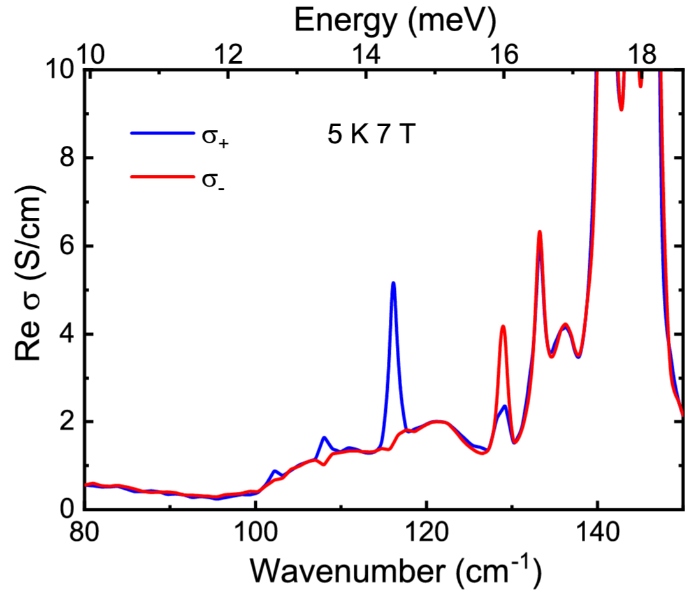

K. Panda et al., arXiv:2507.17238 [cond-mat.str-el] (2025)
S. Iguchi et al., Phys. Rev. Res. 7, (2025)
Case Studies:
Off-Diagonal Elements of $\tilde{\sigma}_{ij}$
$$\tilde{\sigma} = \begin{pmatrix} {\sigma}_{xx} & \color{#8F1B06}{\sigma_{xy}} & 0 \\ -\color{#8F1B06}{\sigma_{xy}} & {\sigma}_{xx} & 0 \\ 0 & 0 & {\sigma}_{zz} \end{pmatrix}$$
$\text{MnTe}$
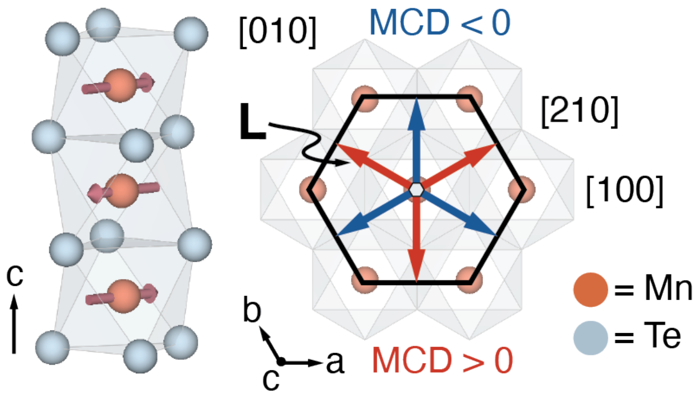
M. Wenzel et al., Phys. Rev. B 111, (2025)
Case Studies:
Diagonal Elements of $\tilde{\sigma}_{ij}$
$$\tilde{\sigma} = \begin{pmatrix} \color{#8F1B06}{\sigma_{xx}} & {\sigma_{xy}} & 0 \\ -{\sigma_{xy}} &\color{#8F1B06}{\sigma_{xx}} & 0 \\ 0 & 0 & \color{#8F1B06}{\sigma_{zz}} \end{pmatrix}$$
$\text{FeSb}_2$
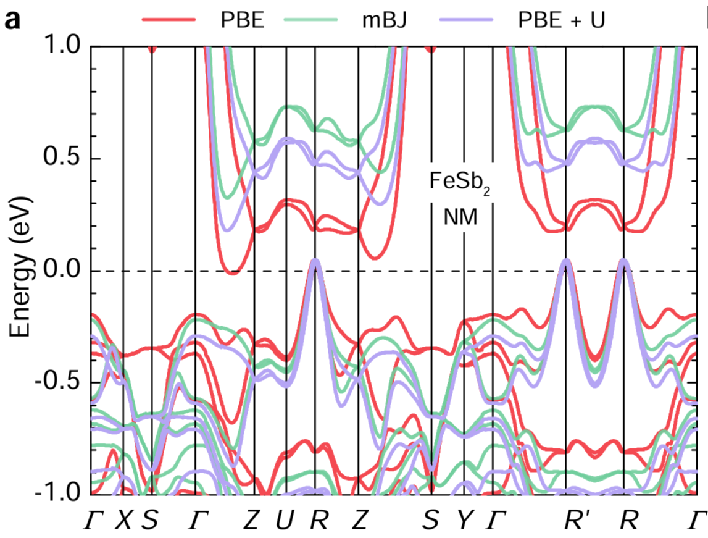

Breaking the Symmetry
Transformation Symmetry in Different Magnetic Orders
a: Ferro
- \(\mathbf{M} \neq 0\)
Breaks time-reversal symmetry \(\mathcal{T}\)- No spin degeneracy

b: Anti-Ferro
- \(\mathbf{M} = 0\)
Preserves symmetry \(\mathcal{P}\mathcal{T}\)- Spin-degenerate electronic bands

c: Altermagnet
- \(\mathbf{M} = 0\)
Breaks \(\mathcal{T}\) butpreserves \(\mathcal{P}\mathcal{T}\)- No spin degeneracy

Optical Behavior
Linear Response Theorem and the Optical Conductivity Tensor
Normal materials follow
- Absolute Reflectivity \(R(\omega)\)
- Rotation \(\Delta\Psi(\omega)\), Ellipticity $\eta$
Isolate Altermagnetism as source of off-diagonal elements
Ordinary:
$$\tilde{\sigma} = \begin{pmatrix} {\sigma}_{xx} & 0 & 0 \\ 0 & {\sigma}_{xx} & 0 \\ 0 & 0 & {\sigma}_{xx} \end{pmatrix}$$
Magnetic:
$$\tilde{\sigma} = \begin{pmatrix} \tilde{\sigma}_{xx} & \tilde{\sigma}_{xy} & 0 \\ -\tilde{\sigma}_{xy} & \tilde{\sigma}_{xx} & 0 \\ 0 & 0 & \tilde{\sigma}_{zz} \end{pmatrix}$$
Structural:
$$\tilde{\sigma} = \begin{pmatrix} \tilde{\sigma}_{xx} & \tilde{\sigma}_{xy} & 0 \\ +\tilde{\sigma}_{xy} & \tilde{\sigma}_{xx} & 0 \\ 0 & 0 & \tilde{\sigma}_{zz} \end{pmatrix}$$
Optical Behavior
Mechanisms Generating Off-Diagonal Tensor Elements (\(\sigma_{xy}\))
Antisymmetric (\(\sigma_{xy} = -\sigma_{yx}\))
Requires Time-Reversal Breaking
- External Magnetic Field (\(\mathbf{B} \neq 0\)): Explicitly breaks \(\mathcal{T}\) via the Lorentz force, cyclotron motion / Ordinary Hall effect.
- Ferromagnetism (\(\mathbf{M} \neq 0\)): Spontaneous global \(\mathcal{T}\)-breaking coupled with Spin-Orbit Interaction
- Altermagnetism (\(\mathbf{M} = 0\)): Spontaneous \(\mathcal{T}\)-breaking through alternating crystal symmetries.
Symmetric (\(\sigma_{xy} = \sigma_{yx}\))
Structural & Reciprocal Origins
- Crystal Misalignment: Choosing a laboratory coordinate framework that is rotated relative to the principal crystallographic axes.
- Linear Birefringence / Dichroism: Intrinsic optical anisotropy in lower-symmetry crystal systems (like the orthorhombic structure of \(FeSb_2\)).
- Piezomagnetic / Magnetoelectric Effects: Strain-induced or voltage-induced modifications to the tensor framework
Optical Behavior
Structural Origin of $\sigma_{xy}$: Low-Symmetry Monoclinic/Orthorhombic Systems
Example: Structural Monoclinic Angle Alignment
Internal crystal axes $(a, b, c)$ do not match an orthogonal laboratory coordinate framework $(x, y, z)$:
- Purely Structural: Occurs in completely non-magnetic, time-reversal symmetric insulators.
- The Consequence: Electric fields applied along the laboratory $x$-axis naturally induce a polarization current along the laboratory $y$-axis due to the tilted unit cell shape.
- Tensor Property: Enforces a strictly symmetric off-diagonal element:
$\sigma_{xy} = \sigma_{yx}$ .
Laboratory vs. Crystal Coordinates
▲ / b (Crystal Axis)
│ /
│ / β ≠ 90°
│/__________► x (Lab Axis)
└──► a (Crystal Axis)
Applying $E_x$ yields a projection along both $a$ and $b$, mechanically generating an $J_y$ response.
The Magneto-Optical Kerr Effect (MOKE)
Measuring the Optical Conductivity Tensor
$$\tilde{\sigma}_{xy}(\omega) \propto \theta_K + i\eta_K $$
- $\theta_K (\Psi)$ (Rotation) $\leftrightarrow$ Dispersive part, Im($\tilde{\sigma}_{xy}$)
- $\eta_K$ (Ellipticity) $\leftrightarrow$ Dissipative part, Re($\tilde{\sigma}_{xy}$)

Conventions:
- a:
polar - b: longitudinal
- c: transversal
Lets us extract $\sigma_{xy}$ from the reflected $\theta_K$ and $\eta_K$.

The Magneto-Optical Kerr Effect (MOKE)
Measuring the Kerr Rotation and Ellipticity
The Magneto-Optical Kerr Effect (MOKE)
Measuring the Kerr Rotation and Ellipticity
Measuring the MOKE Response
Experimental Setup and Data Analysis: Single Frequency

Setup:
- Light source: Monochromatic, linearly polarized light
- PEM: Polarization-encoding module
- Analyzer: Rotating polarizer
- Detector: Intensity measurement device
- Lock-in Amplifier: Optional, Signal processing unit
Data Analysis:
- \(\text{I}_{dc}\): Direct current, Absolute Reflectivity \(R(\omega)\)
- \(\text{I}_{1f}\): First harmonic component, Kerr ellipticity \(\eta_K\)
- \(\text{I}_{2f}\): Second harmonic component, Kerr rotation \(\theta_K\)
Measuring the MOKE Response
Experimental Setup and Data Analysis: Single Frequency
Advantages:
- Sensibility: High, up to milliradians
- Noise: Low, because of Lock-In Amplifier
Disadvantages:
- Chromatic hardware: Wavelength dependent (e.g. PEM)
- Resolution: Low, maybe one frequency
Useless or very high effort for broad band measuring!
Optical Behavior
Linear Response Theorem
✎Concept
For broadband spectrum,
⚠Problem
Linear polarizers can measure absolute reflectivity $R$ and Kerr rotation $\theta_K$ but without a waveplate,
Optical Behavior
Linear Response Theorem
✎Concept
⚠Problem
Kramers Kronig Relation
Condition:
$$ \color{#8f5060}{\text{Re}[f(\omega)]} = \frac{1}{\pi} \mathcal{P} \int_{-\infty}^{\infty} \frac{\color{#428377}{\text{Im}[f(x)]}}{x - \omega} dx$$
$$ \color{#428377}{\text{Im}[f(\omega)]} = -\frac{1}{\pi} \mathcal{P} \int_{-\infty}^{\infty} \frac{\color{#8f5060}{\text{Re}[f(x)]}}{x - \omega} dx $$

https://upload.wikimedia.org/wikipedia/commons/4/45/Kramersgifwiki.gif: (2026)
Magneto-Optical Kramers-Kronig Analysis
Experimental Setup and Data Analysis: Broad Band
- Measurement:
Use linear polarizers to get total reflectivity $R(\omega)$ and Kerr rotation $\color{#428377}{\theta_K(\omega)}$. - Define Auxiliary Function: $$f(\omega) = \ln\left(\frac{\tilde{r}_-}{\tilde{r}_+}\right) = \color{#8f5060}{\ln c(\omega)} + i \cdot \color{#428377}{2\theta_K(\omega)}$$
- Apply Kramers-Kronig: $$ \color{#8f5060}{\ln c(\omega)} = \frac{2\omega}{\pi} \mathcal{P} \int_0^\infty \frac{\color{#428377}{2\theta_K(x)}}{x^2 - \omega^2} dx $$
- Reconstruct & Solve:
With $\left[R = (R_+ + R_-)/2\right]$ and $\left[c = R_-/R_+\right]$, we solve for $R_+$ and $R_-$ individually. A final KK transform on these yields the full complex $\tilde{r}_\pm(\omega)$.
Magneto-Optical Kramers-Kronig Analysis
Experimental Setup and Data Analysis: Broad Band
- Auxiliary Function: $$f(\omega) = \ln\left(\frac{\tilde{r}_-}{\tilde{r}_+}\right) = \color{#8f5060}{\ln c(\omega)} + i \cdot \color{#428377}{2\theta_K(\omega)}$$
- Kramers-Kronig: $$ \color{#8f5060}{\ln c(\omega)} = \frac{2\omega}{\pi} \mathcal{P} \int_0^\infty \frac{\color{#428377}{2\theta_K(x)}}{x^2 - \omega^2} dx $$
- Reconstruct & Solve: $$ R = \frac{R_+ + R_-}{2} \hspace{20mm} c = \frac{R_-}{R_+} $$
Advantage
- Avoids the spectral limitations of wave plates
- Still highly sensitive to small signals
- Ideal for altermagnets
But what if we measure in extreme environments?
High magnetic fields & low temperatures obstruct rotating equipment!
MOKKA: The 45-Degree Fast Protocol
Broad band measuring in extreme environments
Setup
- Polarizer and Analyzer are fixed at 45° to each other
- This geometry
maximizes sensitivity to rotation
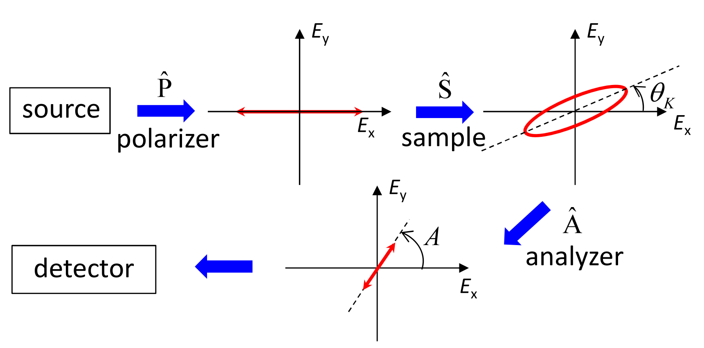
Analysis
- Detector intensity proportional to the Kerr angle, for small angles: $$ I_{\pm45^\circ} \approx C \cdot R(\omega) \frac{1 \pm 2\theta_K(\omega)}{2} $$
- Measure intensity ratio at positive and negative magnetic fields and isolate $\theta_K$: $$ \rho_{\pm45^\circ}(B) = \frac{I_{\pm45^\circ}(+B)}{I_{\pm45^\circ}(-B)} \approx 1 \pm 4\theta_K(B) $$
MOKKA: The 45-Degree Fast Protocol
Broad band measuring in extreme environments
Disadvantage
Limited spectral resolution and sensitivity compared to other techniques.
Advantage
Completely fit for comparing results with DFT calculations
Mueller Matrix Analysis
alternative optical response decomposition
$M_{exp}(\omega, \phi)$
via Oscillators
via Berreman 4x4
(Regression)
Mueller Matrix Analysis
alternative optical response decomposition
$M_{exp}(\omega, \phi)$
Optical Model
via Oscillators
via Berreman 4x4
(Regression)
$\sigma(\omega)$
Mueller Matrix Formula:
Measure the Mueller Matrix by varying the angle of incidence ($\Phi$) and scanning the photon energy ($\hbar\omega$): $${S_{\text{out}}(\omega)} = {M(\omega)} \cdot \color{#8b4e5d}{S_{\text{in}}(\omega)} = {\begin{pmatrix} \color{#443f85}{ M_{11}} & \color{#443f85}{M_{12}} & \color{#387066}{M_{13}} & \color{#387066}{M_{14}} \\ \color{#443f85}{ M_{21}} & \color{#443f85}{M_{22}} & \color{#387066}{M_{23}} & \color{#387066}{M_{24}} \\ \color{#387066}{M_{31}} & \color{#387066}{M_{32}} & \color{#443f85}{M_{33}} & M_{34} \\ \color{#387066}{M_{41}} & \color{#387066}{M_{42}} & M_{43} & \color{#443f85}{M_{44}} \end{pmatrix}} \color{#8b4e5d}{\begin{pmatrix} I \\ Q \\ U \\ V \end{pmatrix}}$$
- ordinary refractive index and thickness data.
- cross-polarization induced by the off-diagonal elements of your optical conductivity tensor
Mueller Matrix Analysis
alternative optical response decomposition
$M_{exp}(\omega, \phi)$
Optical Model
via Oscillators
via Berreman 4x4
(Regression)
$\sigma(\omega)$
$${S_{\text{out}}(\omega)}= {\begin{pmatrix} \color{#443f85}{ M_{11}} & \color{#443f85}{M_{12}} & \color{#387066}{M_{13}} & \color{#387066}{M_{14}} \\ \color{#443f85}{ M_{21}} & \color{#443f85}{M_{22}} & \color{#387066}{M_{23}} & \color{#387066}{M_{24}} \\ \color{#387066}{M_{31}} & \color{#387066}{M_{32}} & \color{#443f85}{M_{33}} & M_{34} \\ \color{#387066}{M_{41}} & \color{#387066}{M_{42}} & M_{43} & \color{#443f85}{M_{44}} \end{pmatrix}} \color{#8b4e5d}{\begin{pmatrix} I \\ Q \\ U \\ V \end{pmatrix}}$$
- ordinary refractive index and thickness data.
- cross-polarization induced by the off-diagonal elements of your optical conductivity tensor
Geometric Model Construction of the Sample Stack
$$\text{[Ambient (Air)]} \rightarrow \text{[Surface Roughness]} \rightarrow \text{[Anisotropic/MO Thin Film]} \rightarrow \text{[Substrate]}$$ Typical dielectric tensors for the material layers: $$\tilde{\epsilon}(\omega) = \begin{pmatrix} \color{#443f85}{\epsilon_{xx}(\omega)} & \color{#387066}{\epsilon_{xy}(\omega)} & 0 \\ \color{#387066}{-\epsilon_{xy}(\omega)} & \color{#443f85}{\epsilon_{yy}(\omega)} & 0 \\ 0 & 0 & \color{#443f85}{\epsilon_{zz}(\omega)} \end{pmatrix}$$
Mueller Matrix Analysis
$M_{exp}(\omega, \phi)$
Optical Model
via Oscillators
via Berreman 4x4
(Regression)
$\sigma(\omega)$
$${S_{\text{out}}(\omega)}= {\begin{pmatrix} \color{#443f85}{ M_{11}} & \color{#443f85}{M_{12}} & \color{#387066}{M_{13}} & \color{#387066}{M_{14}} \\ \color{#443f85}{ M_{21}} & \color{#443f85}{M_{22}} & \color{#387066}{M_{23}} & \color{#387066}{M_{24}} \\ \color{#387066}{M_{31}} & \color{#387066}{M_{32}} & \color{#443f85}{M_{33}} & M_{34} \\ \color{#387066}{M_{41}} & \color{#387066}{M_{42}} & M_{43} & \color{#443f85}{M_{44}} \end{pmatrix}} \color{#8b4e5d}{\begin{pmatrix} I \\ Q \\ U \\ V \end{pmatrix}}$$
$$\tilde{\epsilon}(\omega) = \begin{pmatrix} \color{#443f85}{\epsilon_{xx}(\omega)} & \color{#387066}{\epsilon_{xy}(\omega)} & 0 \\ \color{#387066}{-\epsilon_{xy}(\omega)} & \color{#443f85}{\epsilon_{yy}(\omega)} & 0 \\ 0 & 0 & \color{#443f85}{\epsilon_{zz}(\omega)} \end{pmatrix}$$
Modelling the tensor elements:
- Lorentz oscillators
- Tauc-Lorentz models (semiconductors/insulators)
- Drude terms (metals)
Fitting Functions:
$$\epsilon_{xy}(\omega) = \sum_j \left[ \frac{A_{j}^+}{\omega_{0,j}^+ - \omega - i\Gamma_j^+} - \frac{A_{j}^-}{\omega_{0,j}^- - \omega - i\Gamma_j^-} \right]$$$$\epsilon_{xx}(\omega) = \epsilon_\infty + \sum_k \frac{A_k}{\omega_{0,k}^2 - \omega^2 - i\Gamma_k \omega}$$
System is reduced to a finite set of global fit parameters:
Mueller Matrix Analysis
$M_{exp}(\omega, \phi)$
Optical Model
via Oscillators
via Berreman 4x4
(Regression)
$\sigma(\omega)$
$${S_{\text{out}}(\omega)}= {\begin{pmatrix} \color{#443f85}{ M_{11}} & \color{#443f85}{M_{12}} & \color{#387066}{M_{13}} & \color{#387066}{M_{14}} \\ \color{#443f85}{ M_{21}} & \color{#443f85}{M_{22}} & \color{#387066}{M_{23}} & \color{#387066}{M_{24}} \\ \color{#387066}{M_{31}} & \color{#387066}{M_{32}} & \color{#443f85}{M_{33}} & M_{34} \\ \color{#387066}{M_{41}} & \color{#387066}{M_{42}} & M_{43} & \color{#443f85}{M_{44}} \end{pmatrix}} \color{#8b4e5d}{\begin{pmatrix} I \\ Q \\ U \\ V \end{pmatrix}}$$
$$\tilde{\epsilon}(\omega) = \begin{pmatrix} \color{#443f85}{\epsilon_{xx}(\omega)} & \color{#387066}{\epsilon_{xy}(\omega)} & 0 \\ \color{#387066}{-\epsilon_{xy}(\omega)} & \color{#443f85}{\epsilon_{yy}(\omega)} & 0 \\ 0 & 0 & \color{#443f85}{\epsilon_{zz}(\omega)} \end{pmatrix}$$
$$\epsilon_{xx}(\omega) = \epsilon_\infty + \sum_k \frac{A_k}{\omega_{0,k}^2 - \omega^2 - i\Gamma_k \omega}$$
$$\epsilon_{xy}(\omega) = \sum_j \left[ \frac{A_{j}^+}{\omega_{0,j}^+ - \omega - i\Gamma_j^+} - \frac{A_{j}^-}{\omega_{0,j}^- - \omega - i\Gamma_j^-} \right]$$
Regression Analysis and Extracting the Conductivity Tensor
- Vary oscillator parameters and layer thicknesses to minimize a global Mean Squared Error (MSE)
- Extract the complex optical conductivity tensor $\tilde{\sigma}(\omega)$ from the dielectric tensor $\tilde{\epsilon}(\omega)$$$\tilde{\sigma}(\omega) = -i\epsilon_0\omega \left[ \tilde{\epsilon}(\omega) - \mathbf{I} \right]$$
Mueller Matrix Measurement
antiferromagnetic Weyl semi-metal $\text{Mn}_3\text{Sn}$
Setup
- Optical Range: $300 - 1690\text{ nm}$ (UV to Near-IR) over incident angles $45^\circ - 75^\circ$.
- Magnetic Control: In-plane Voigt Geometry using a
permanent magnet aligned along specific crystalline orientations. - Thermal Control: A custom semiconductor stage enabling variable
temperature sweeps ($300 - 400\text{ K}$). - Inversion: Convert Mueller Matrix into anisotropic permittivity tensor via the
$4 \times 4$ Transfer Matrix Method .
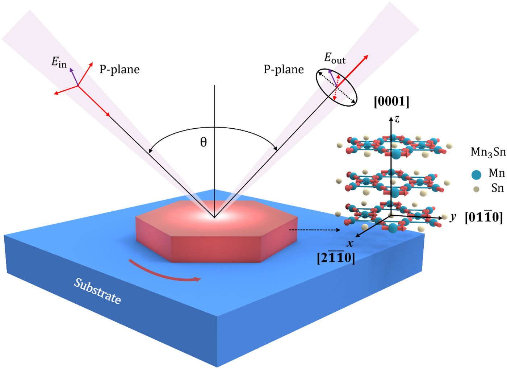
Mueller Matrix Measurement
Direct Mapping of Crystal Anisotropy & Berry Curvature
Analysis
- Diagonal Response ($\epsilon_{xx}, \epsilon_{zz}$): Maps the fundamental, highly anisotropic electronic transitions along different crystal axes
- Off-Diagonal Response ($\epsilon_{xy}, \epsilon_{yz}$): Captures the spontaneous magneto-optical activity
- The Metric: Evaluated through the Transverse Magneto-Optical Kerr Effect (TMOKE) response across the spectrum.
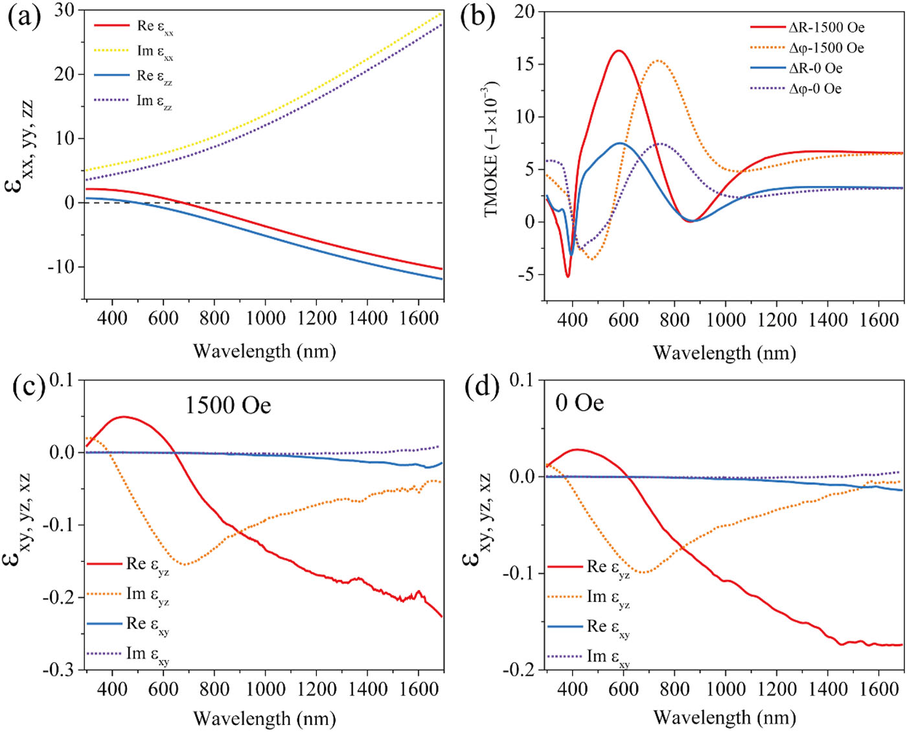
Simulation methods
QM simulation as reference to experimental results
Optical Response Experiments
vs
Predictions from DFT Simulations
- Calculate band structure
- Use Kubo formula to calculate optical conductivity tensor
- Compare with experimental MOKE data to confirm altermagnetic order

We need a path from band stucture to optical response:
The Kubo Formula
Linking Band Structure to Optical Response
1. The Resonance (Denominator)
- \((E_m - E_n - \hbar\omega)\) dictates when a peak occurs
- Vertical interband transitions at specific \(\text{k}\)-points
2. The Topology (Matrix Elements)
- \(\langle \hat{v}_x \rangle \langle \hat{v}_y \rangle\) contains spin-sign
- In altermagnets, this product survives the BZ sum
◆Symmetry Note:
In standard AFMs, \(\sigma_{xy}(\text{k}) + \sigma_{xy}(\mathcal{PT}\text{k}) = 0\).
◆Altermagnetism:
Alternating spin-polarization in \(\text{k}\)-space \(\rightarrow\) net non-zero sum for the off-diagonal elements.
The Kubo Formula
Band split Fermi Surface and resulting Kubo Integral
\[\tilde{\sigma}_{xy}(\omega) \propto \dots \sum \int \frac{\Delta f}{\Delta E - \hbar\omega} \times \langle \hat{v}_x \rangle \langle \hat{v}_y \rangle \]

A split Fermi-Surface produces non-zero Kubo-Integral values
$\rightarrow$ non-zero $\sigma_{xy}$
The Kubo Formula
\[\tilde{\sigma}_{xy}(\omega) \propto \dots \sum \int \frac{\Delta f}{\Delta E - \hbar\omega} \times \langle \hat{v}_x \rangle \langle \hat{v}_y \rangle \]


Off-Diagonal Tensor Elements
With the Examples of \(\text{MnTe}\) and \(\text{CrSb}\)
The Candidate: Hexagonal $\alpha-\text{MnTe}$
Symmetry Protection & Order Parameter
The Order Parameter
Néel Vector $\mathbf{L}$:$$\mathbf{L} = \mathbf{M}_1 - \mathbf{M}_2$$
Probed via localized Mn2+ ions hosting high-spin $S = 5/2, L = 0$ states.
Symmetry & Topology
- Two magnetic sublattices mapped onto each other via a
six-fold screw rotation . - Broken time-reversal symmetry ($\mathcal{T}$) combined with spatial translation enforces a
d-wave altermagnetic state . - The crystal hosts a native
six-fold magnetocrystalline anisotropy (MCA) pinning landscape.
Structure of $\alpha-\text{MnTe}$
Challenge for Production
To make altermagnets industrially viable for spintronics, we need large, macroscopically uniform domains. Knowing how external and internal stress fields alter this magnetic ordering dictates exactly how these devices must be fabricated and handled.
Coherent Néel Vector Steering
Magneto-optical measurements of MCD, $\phi_0$ and $\Delta$
Measurements
$\phi_0$ the birefringence angle with respect to the $[100]$ direction.
Calculations via reflectivity matrix $\tilde{r}$ with $r_0 = (r_{xx} + r_{yy})/2$.
Connection to MOKE
The measurements are closely related to the optical conductivity tensor $\sigma_{ij}(\omega)$, and the dielectric tensor $\epsilon_{ij}(\omega)$. The measurements relate through the intensities measured by MOKE.
$$I_{\omega} \propto MSD$$ $$I_{2\omega}(\phi) \propto \Delta \cdot \cos2(\phi+\phi_0)$$
S. Kimura et al., arXiv:2603.21455, [cond-mat.str-el] (2026)
Coherent Néel Vector Steering
Probing Off-Diagonal Elements via In-Situ Strain
Strain Dependence
- $\text{MCD}$ and $\phi_0$ show hysteresis like behavor
- Birefringence Amplitude $\Delta$ is nearly constant over different strain
- All measurements performed at $ \omega/2\pi \approx 50 \text{ kHz}$
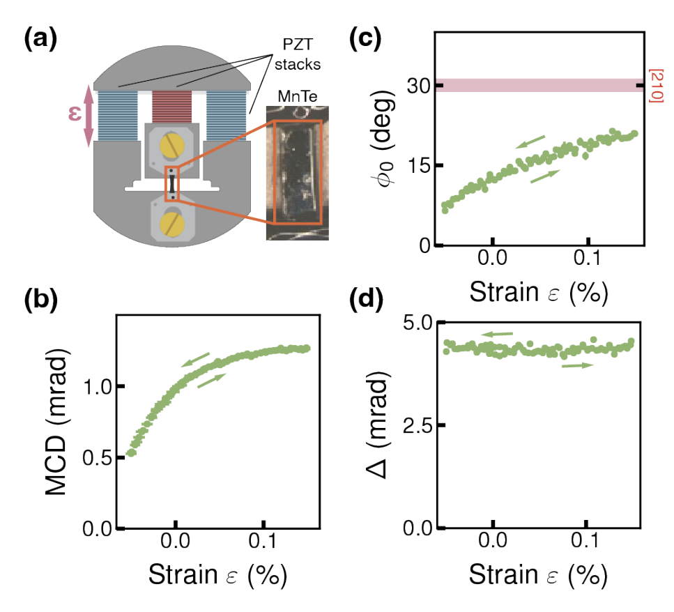
Coherent Néel Vector Steering
Probing Off-Diagonal Elements via In-Situ Strain
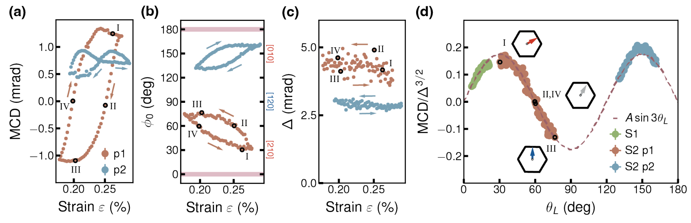
Strain Dependence
- $\text{MCD}$ and $\phi_0$ show hysteresis like behavor
- Birefringence Amplitude $\Delta$ is nearly constant over different strain
Néel Vector Orientation
- $\text{MCD}$ fits to $\sin(\theta_L)$
$\rightarrow$ Néel Vector is the primary order parameter
Temperature and Strain dependence of $\text{MnTe}$
optical measurements as indicator of altermagnetism
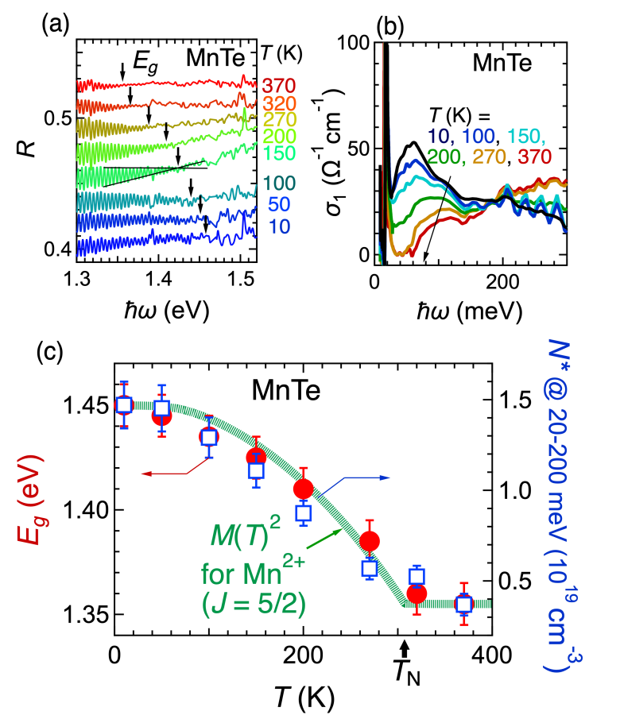
Observations
Figure (a) shows the temperature dependence of the interference fringes near the energy gap. The fringes arise due to the transparent character of the thin sample.
- Figure (b): Pure optical conductivity measurement
- Figure (c): Clear $E_g \propto M(T)^2$ dependence
Material might be altermagnet with band splitting like ferromagnetic materials
Temperature and Strain dependence of $\text{MnTe}$
optical measurements as indicator of altermagnetism
Observations
- Figure (a): $\sigma_1(\omega)$ spectra (circles) at $T = [10, 100, 200, 370] \text{ K}$ for $\hbar \omega < 150 \text{ meV}$.
- Figure (b): Fano asymmetric parameter ($1/q^2$ , red solid circles) of phonon peak and peak intensity ($N^*$ , blue open squares) of the 20-meV peak as a function of $T$.
- Figure (c): Expected temperature-dependent electronic-structure change near EF and the origins of the peaks in $\sigma_1(\omega)$ spectra.
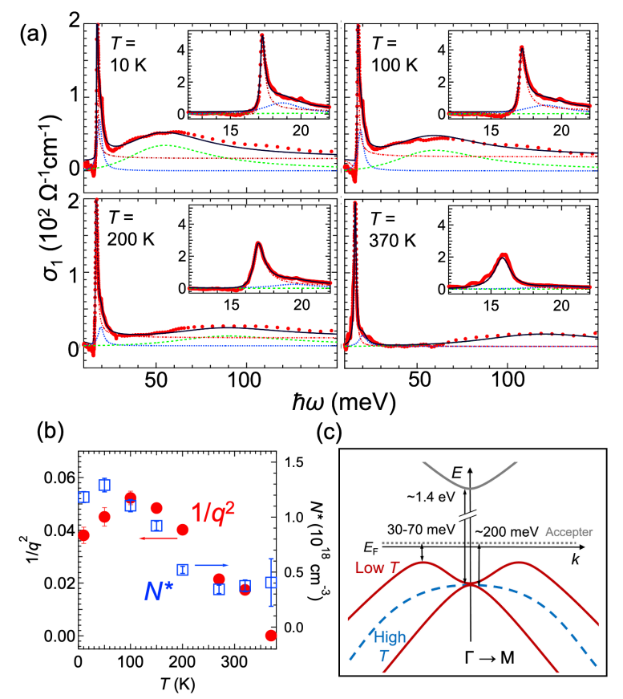
Temperature and Strain dependence of $\text{MnTe}$
optical measurements as indicator of altermagnetism
Assumptions
Temperature dependent Fano Term from in-gap states which interact with phonons at low temperatures.- The in-gap state is thought to originate from the altermagnetic spin-split bands.
- The altermagnetic electronic structure appearance influences the Mn-Te stretching mode.
Temperature and Strain dependence of $\text{MnTe}$
optical measurements as indicator of altermagnetism
Strain
This paper also shows a strain dependence of the optical conductivity.
This was well discovered in "Strain continuously rotates the Néel vector in altermagnetic MnTe".
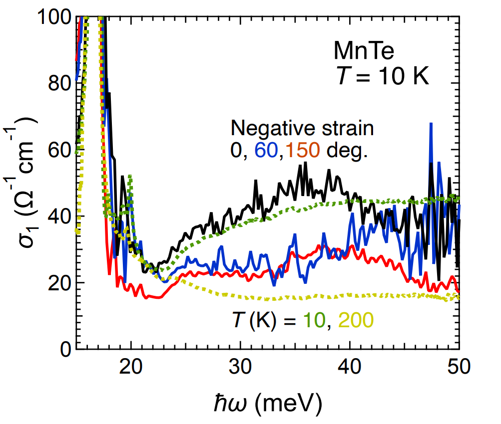
Coherent Néel Vector Steering
Probing Off-Diagonal Elements via In-Situ Strain
Magneto-Optical Trackers
By mapping the complex reflection coefficients, isolate elements linked directly to the off-diagonal dielectric tensor $\epsilon_{xy}(\omega)$:
- $I_{\omega} \propto \text{MCD} \propto L^3 \sin(3\theta_L)$
- $I_{2\omega}(\phi) \propto \Delta \cdot \cos[2(\phi + \phi_0)]$
- $\Delta\propto L^2$
Conclusion
The stress is not changing the size of the altermagnetic order parameter ($L$). It is continuously rotating its direction ($\theta_L$).
The Discovery
Under applied stress, MCD and $\phi_0$ evolve continuously, while $\Delta$ remains constant.
The $1/q^2$ Fano parameter scaling supports spin-splitting.
Application Rule
For applied altermagnetic material like in spin-tronics, keeping temperature and strain constant might be essential.
The Candidate: $\text{CrSb}_2$
Dummy text
Diagonal Tensor Elements
With the Examples of \(\text{FeSb}_2\) and \(\text{RuO}_2\)
Cobalt-doped $\text{FeSb}_2$
A Case Study in Altermagnetism

The Parent Compound
$\text{FeSb}_2$ as a natural altermagnet candidate
Orthorhombic \(\text{Pnnm}\) structure
$\text{P}$ (Primitive): Primitive, no additional lattice points except at corners$\text{n}$ (1st axis): n-glide plane perpendicular to the a-axis. Reflection followed by translation: $t= \frac{b+c}{2}$.$\text{n}$ (2nd axis): n-glide plane perpendicular to the b-axis. Reflection followed by translation: $t = \frac{a+c}{2}$.$\text{m}$(3rd axis): A standard Mirror plane perpendicular to the $c$-axis. This is a simple reflection without any translation.
\(Fe\) Sublattice is invariant under two-fold rotation + translation $[ C_2 \parallel C_{2x} t]$
Makes a
The necessary Symmetry Condition
For the example of the \(\text{FeSb}_2\) crystal unit cell
The Parent Compound
Correlated narrow-gap semiconductor
Band Structure

Resistivity

- Transport gap of approximately 30 meV
- Optical gap of roughly 120 meV
- No long range magnetic order
- Rising resistivity at low temperatures
Mathew Roy et al., arXiv:2604.28105
The Parent Compound
Correlated narrow-gap semiconductor
- Transport gap of approximately 30 meV
- Optical gap of roughly 120 meV
- No long range magnetic order
- Rising resistivity at low temperatures

Antiferromagnetic (AFMe) order

Altermagnetic (AFMo) order

Cobalt-doped $\text{FeSb}_2$
Stabilation via Carrier doping with electrons
Adding electrons/holes
- Adds impurities
- Quenches the spin fluctuations
- Stabilize the AFMo order
- Adding holes has similar effect ($\text{Cr}$ doping)
Result
- Crystal structure is preserved
- Semiconducting gap is closed
- Persisting up to room temperature


Cobalt-doped FeSb2
Closing the gap and stabilizing the altermagnetic state
X-ray diffraction patterns

Crystal structure
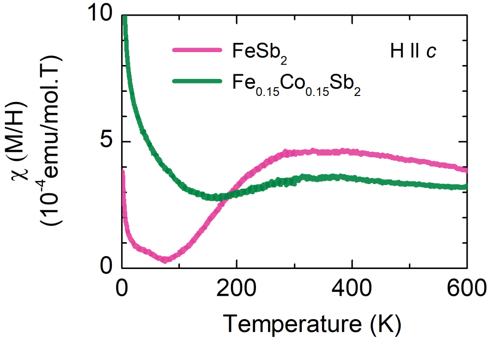

Effects of Cobalt Doping
Transformation from correlated semiconductor to anisotropic metal
- $\text{FeSb}_2$ is a narrow-gap semiconductor (~0.3 eV) with high resistivity at low temperatures.
- With
Cobalt substitution ($\text{Fe}_{0.85}\text{Co}_{0.15}\text{Sb}_2$), you inject extra electrons into the system. This extra chargecollapses the semiconducting gap . - In the optical conductivity $\sigma_1(\omega)$, this is proven by the emergence of a
Drude peak along with new mid-infrared interband transitions at 0.1 eV.
Drude peak: a sharp spike in absorption centered at zero energy, which is the universal optical signature of free, mobile conduction electrons
Effects of Cobalt Doping
Transformation from correlated semiconductor to anisotropic metal
- Metallic transition does not destroy directional preferences. The optical response is still highly dependent on whether the light is polarized along the crystal's $a$-axis or $c$-axis.
- Unscreened plasma frequency ($\omega_p$) along the $c$-axis (2.23 eV) higher than $a$-axis (1.95 eV). Since $\omega_p^2$ is proportional to the carrier density ($n$) divided by the effective mass ($m^*$), this means the electrons are physically "lighter" or more densely packed along the $c$-axis.
- Crucial, because altermagnets natively rely on anisotropic transport properties.
Effects of Cobalt Doping
Transformation from correlated semiconductor to anisotropic metal
- Adding impurities/dopants to a pristine crystal creates atomic disorder, increasing the electron scattering rate ($1/\tau$), making the material dirtier and more resistive.
- But: scattering rate actually drops drastically to less than half of the parent compound's value (e.g., along the $a$-axis at 300 K, from 1221 $\text{cm}^{-1}$ down to 336 $\text{cm}^{-1}$).
- Therefore, the dominant source of electrical resistance was highly violent, incoherent spin fluctuations.
Cobalt doping introduces a stable magnetic environment that suppresses these fluctuations so the electrons can flow much more smoothly through the lattice, despite the Cobalt impurities.
Effects of Cobalt Doping
Transformation from correlated semiconductor to anisotropic metal

Preparing the DFT Simulation
Selection of $E_{xc}$ functional and magnetic order
- No matching $\text{DOS}$ at $E_F$
- No matching Band structure
- No matching optical conductivity
The AFM state is not the ground state of $\text{FeSb}_2$
The underestimation of band gaps aligns with itinerant spin fluctuations.
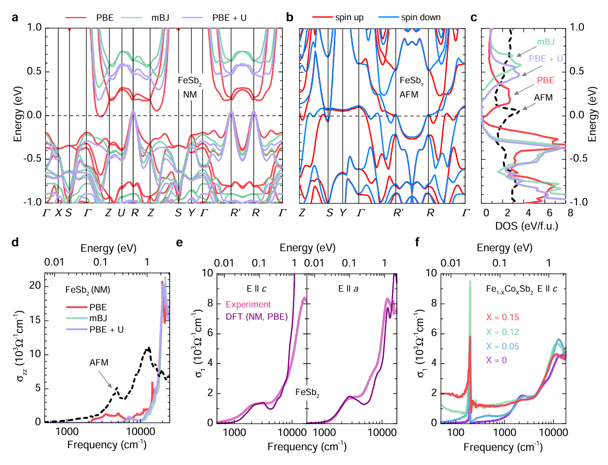
Identifying the Altermagnetic State
The DFT Comparison (NM vs. AFMe vs. AFMo)
Only the
Identifying the Altermagnetic State
Non-Relativistic Spin Splitting
Fermi-Surface

- Clear spin-splitting of the Fermi surface
- Alternating spin-polarization across the Brillouin zone
Band-Structure
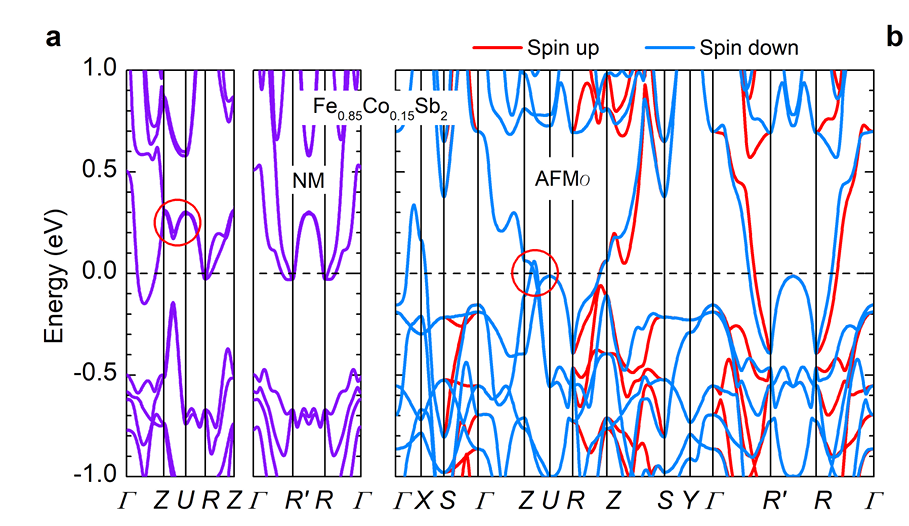
$\text{RuO}_2$ Controversy: A Model Altermagnet?
Early Prediction of Altermagnetism
Surface Probe (ARPES): Evidence for Spin-Splitting
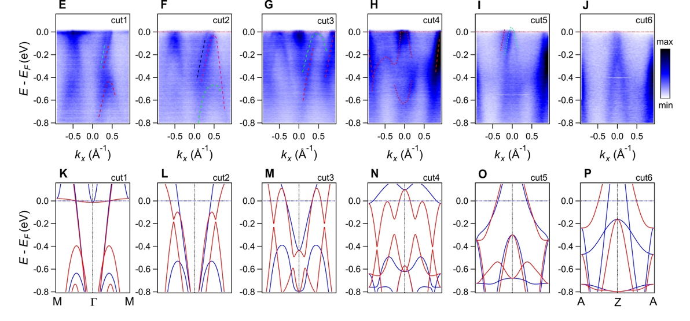
$\text{RuO}_2$ Controversy: A Model Fermi-Liquid?
Fermi-Liquid Behavior in Bulk $\text{RuO}_2$
Experiment matches NON-magnetic model
test
- Sharp
Pauli Edge around $0.1 \text{ eV}$ - Minimum around $1.5-2.0 \text{ eV}$
- Only
non-magnetic DFT calculation matches
$\text{RuO}_2$ Controversy: A Model Fermi-Liquid!
A Paramagnetic Fermi Liquid
Other characteristics match fermi liquids too!
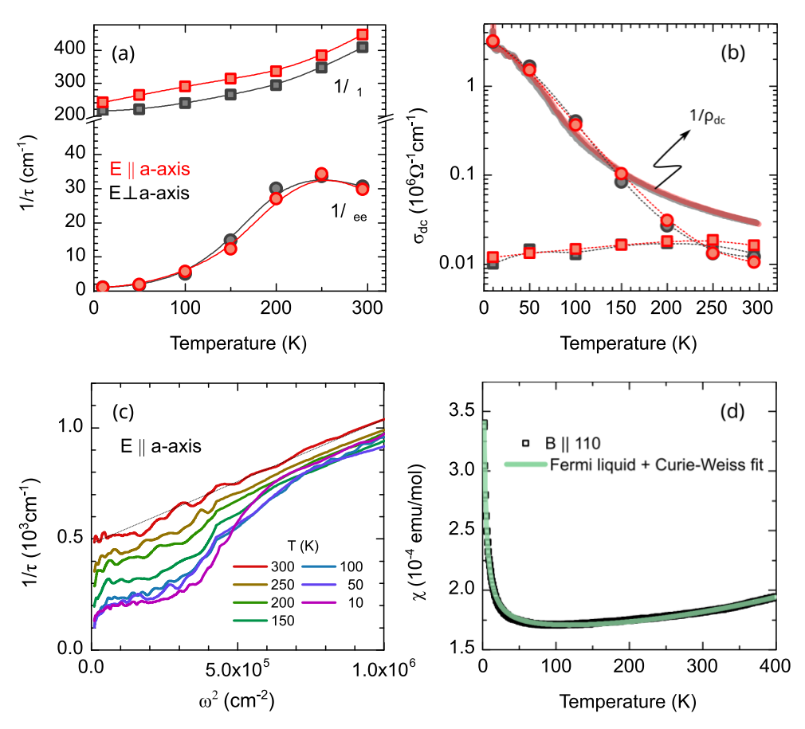
Magnetic Susceptibility Data
Figure (d):
- Excellent fit to a model combining Pauli paramagnetism (T² dependence)
- Small impurity tail
Phase Angle
Figure (c)/(e):
- Quadratic dependence ($\omega^2$)
- hallmark of a Fermi liquid
$\text{RuO}_2$ Controversy: A Model Fermi-Liquid!
A Paramagnetic Fermi Liquid
Other characteristics match fermi liquids too!
Magnetic Susceptibility Data
Figure (d):
- Excellent fit to a model combining Pauli paramagnetism (T² dependence)
- Small impurity tail
Phase Angle
Figure (c)/(e):
- Quadratic dependence ($\omega^2$)
- hallmark of a Fermi liquid
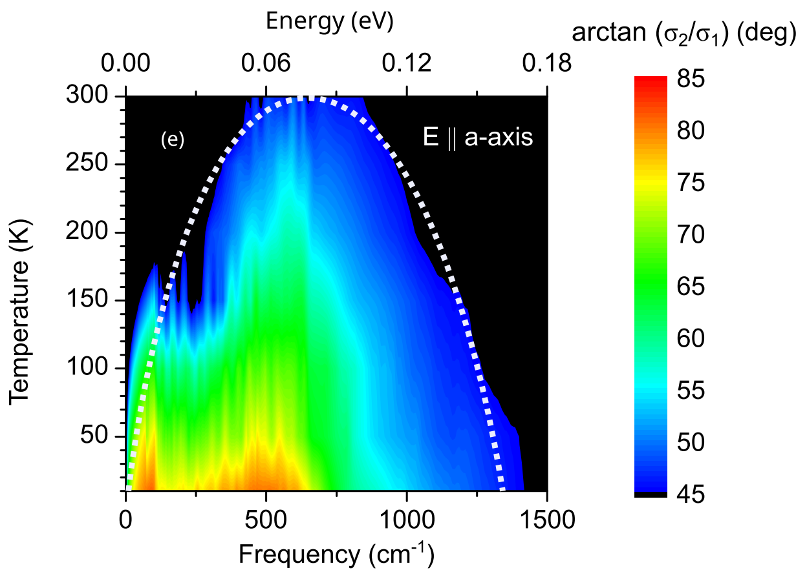
Summary
MOKE
- Single $\omega$
- High Sensitivity
MOKKA
- Broad Band
- Low Sensitivity
Mueller
- Model dependent
- Regression Task
Summary
MOKE
MOKKA
Mueller
MnTe
- info
CrSb
- info
FeSb2
- info
RuO2
- info